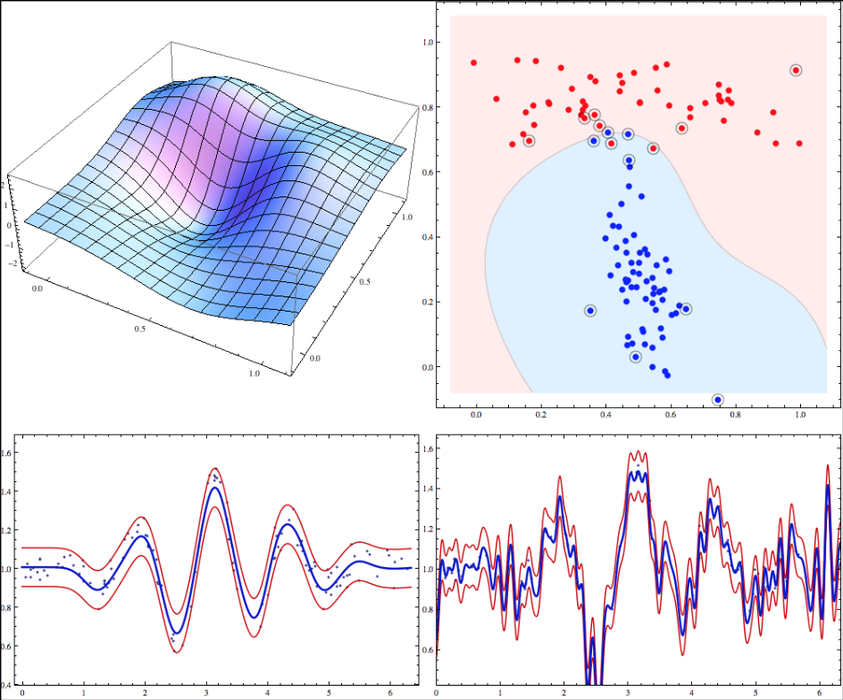
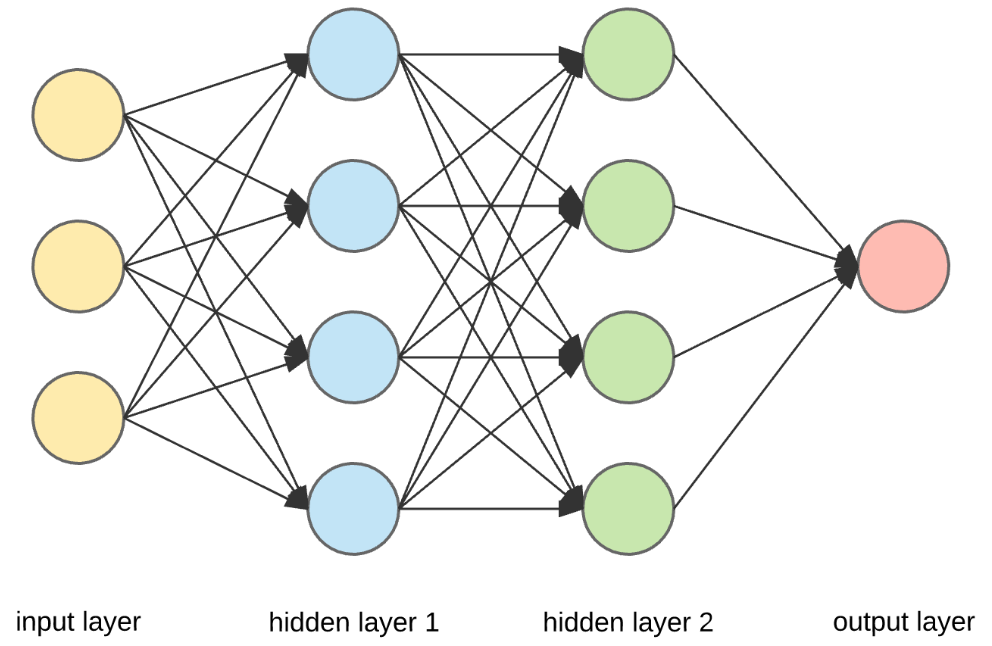

Machine Learning
Our team implemented three machine learning models to predict whether an individual has (or is at risk) of heart disease. Random Forest, Support Vector Machine and Neural Networks are briefly described along with a report of the models' accuracy.
Random forest
The supervised learning method known as the random forest is a component of machine learning. It is employed to ensure that there is neither a high bias nor a high variance in the data within a training set. A random forest is designed to address the problem that no single decision tree can be trusted. A decision tree is a straightforward supervised learning technique that has three components: a root node, a predictor, and a leaf node. It can be used for regression or classification.

Random Forest Confusion Matrix
(75.12%): Most of our accuracie's for our Machine learning models are all around 75%, we believe this is due to the quality and quantity of our data. With some more updated data sets we could possibly have a better accuracy for all machine models.
SVM: Support Vector Machine

Both classification and regression are performed using supervised machine learning techniques known as Support Vector Machines (SVM). The most relevant phrase is categorization, even though we also mention worries about regression. However, classification issues are where it is most frequently utilized. When using the SVM algorithm, each data point is represented as a point in a N-dimensional space (this is where n is the number of features you have), with each feature's value being the value of a certain coordinate.
SVM Confusion Matrix:
(75.20%): The Quality of the training data set is crucial for the model to learn. Your model will never produce correct results if the quality of the machine learning training data sets is poor or inaccurate, which will have an impact on the model's overall performance and make it unsuitable for usage in real-world scenarios. We made sure to "feed" the correct and optimal data to the S.V.M. model.
Neural Network

An efficient illustration of how any AI works is a neural network. It functions by simulating a massive number of interconnected processing units that resemble abstract network representations. The processing units are made up of layers of arrangement. The low-level code is abstracted away when utilizing a neural network in Python, and tools like Keras and TensorFlow make it simpler to build neural networks (which we will be using).
Neural Network Confusion Matrix
(75.04%): Because it was our first time utilizing Neural Networking, our accuracy with it was a little poor due to the structure of our data document's inability to comprehend all of the work.